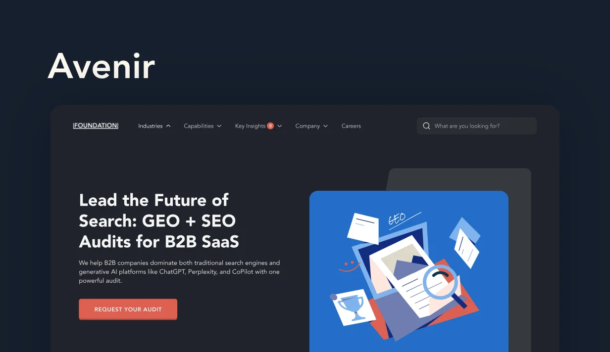

Welcome to the official Foundation brand guide — your go-to source for staying on-brand and looking great while doing it. Whether you’re creating social content, internal decks or marketing campaigns, you’ll find all the approved logos, colors, typography and assets you need here.
Typography plays a key role in how we express the Foundation brand — clean, confident and flexible across mediums.
Primary brand typefaceAa
Avenir
Avenir is Foundation’s primary brand typeface, used exclusively for the website and core digital surfaces. Its modern and versatile design creates a professional tone that represents the brand online. Avenir is reserved for external-facing web experiences to ensure a distinctive and consistent identity.
Usage
Website (headings and body text)
Digital brand assets tied to web presence
External-facing brand communications

Display typefaceAa
Fjalla One
Fjalla One is Foundation’s display typeface, used for high-impact headings in presentations and marketing materials. Its bold, condensed style makes it perfect for grabbing attention, while pairing naturally with Barlow for supporting copy. Together, they form the backbone of Foundation’s presentation and campaign typography system.
Usage
Headings in Google Slides presentations
Marketing decks and advertisements
Social media graphics
Campaign headlines (paired with Barlow for body text)
Barlow is Foundation’s working typeface for proposals, presentations and shared templates. Its clean, geometric design makes it approachable and easy to read, especially in long-form documents. When paired with Fjalla One for headings, Barlow provides a balanced hierarchy — bold titles supported by clear, professional body text.
Color is a fundamental element of the Foundation brand identity. Our palette combines professional blues with warm accent colors to create a balanced, trustworthy and approachable visual experience.
These illustrations are designed specifically for Foundation’s marketing materials. They showcase our brand’s visual style with a professional yet approachable aesthetic. Foundation’s team members have access to the complete illustration library for use in various marketing contexts.
Client syncs, monthly reports, strategy reviews and pitches. Give Claude your call notes and it builds the slides in Foundation’s brand. You bring the facts and check the draft.
How to make it
01Start a new chat in the Foundationinc workspaceNot your personal account. The Foundation design system only shows up in the team workspace.
02Pick Foundation Deck Brand as the design systemAlso name it in your prompt. Until it’s the company default, Claude may otherwise use another brand.
03Tell Claude what the deck is for and paste your notesMeeting type, client, date, then your numbers with comparison dates. Claude picks the right slide layouts and never invents numbers: anything missing comes back as a dashed box.
04Review and editFix words directly on the slides, or ask in the chat (“add a blockers slide”, “make slide 5 a before and after”). Speaker notes hold timing and talk track.
05Send it to Google Slides and finishSend the deck from Claude to Google Slides. Then add the client logo and attach the real links to “Open doc” and “View thread”.
Make our monthly report deck for Lumen for the call on November 24, 2026. Use the Foundation Deck Brand design system.
Theme: Reddit is now Lumen’s #2 source of AI citations.
Team: Maya Torres (Account Manager), Ben Ng (Reddit Strategist). Client: Priya Shah (Head of Community).
Wins: u/ShipItWithLumen hit 1,800 karma (+40% since Oct 20). Comment views 9,400 (+62% since Oct 20). Our sprint guide in r/projectmanagement is now cited by Perplexity and ChatGPT.
Production: 11 live, 3 with client, 1 past due (Batch 5, waiting on Lumen since Nov 14), 4 delivering this week.
Blocker: Lumen legal needs to approve the reply library by Dec 1 (Priya).
Next steps: Lumen sends Batch 5 feedback by Nov 26. We publish Batch 6 by Dec 2.
Next call: December 8, 2026.
The Lumen test deck came from a version of this prompt: a fresh Claude session with only the prompt and the design system.
Account managers · quick, from call notes
Turn these notes into a bi-weekly sync deck for Acme for October 30, 2026, using the Foundation Deck Brand design system. Keep it to 6 slides. Don’t invent numbers; leave a placeholder for anything missing.
[paste your notes here]
Strategists · strategy review
Make a Q1 strategy review deck for Northwind for the call on January 15, 2027. Use the Foundation Deck Brand design system.
Where they are: Northwind shows up in 12% of AI answers across 40 tracked prompts. Tableau shows up in 34%, Looker in 21% (Profound, December 2026).
What we found: Reddit threads are cited in 28% of answers in their category. Northwind has no presence in r/analytics and no YouTube content.
Recommendations: 1) launch an official subreddit, 2) answer the top 20 comparison threads, 3) pilot 4 YouTube walkthroughs.
Q1 roadmap: January research, February subreddit launch, March YouTube pilot.
The ask: approve the Q1 plan by January 22.
Sales · intro pitch
Make a pitch deck for Acme, a B2B payroll software company, for an intro call on November 12, 2026. Use the Foundation Deck Brand design system.
Their problem: when buyers ask AI for the best payroll software for startups, Acme appears in 2 of 10 answers and Gusto in 9 of 10 (our check, Nov 2026).
What we’d do: research the prompts their buyers ask, create content AI engines cite, distribute it on Reddit and YouTube, and track visibility monthly.
Proof: [case study: client, result, timeframe].
Investment: [package and monthly fee].
Next step: a 30-minute scoping call.
Leave the brackets as placeholders.
Write yours the same way: what the deck is for, who it’s for, then your facts.
Pitching a $700K+ program? Those proposals use the client’s own branding, so build them outside this design system.
The 17 layouts
Claude picks these for you. Ask for one by name when you want a change, like “make slide 5 a before and after”.
Opening
1Title
2Team
3Agenda
4Executive summary
Wins and data
5Section divider
6Wins
7KPI stat cards
8Before and after, or trend line
9Ranked list with movement
10Tiered value grid
Production and blockers
11Production status
12Blockers and incidents
Growth
13Opportunities
17Capabilities (optional)
Wrap-up
14Next steps
15Close
16Appendix of links
If something looks off
Wrong colors or fontsClaude used another design system. Reply “Rebuild this with the Foundation Deck Brand design system.”
“Page not found” on a linkThat deck isn’t shared with you yet. Ask the person who made it.
Article images
Make article images in Claude
Custom graphics for Foundation Labs articles: charts, flows, timelines and spectrums. They use the Labs system, which is cooler and lighter than the deck.
How to make it
01Get the image briefRun the image-brief skill in Claude with the article brief and outline. It lists every graphic the article needs. Save it as a Google Doc and link it in the ClickUp task.
02Draft from the Labs systemIn Claude, start from the Foundation Labs Design System and its article graphic template. One graphic per idea: title, one-line standfirst, the graphic, then a source line or the wordmark.
03Send it to FigmaSend the graphics from Claude to Figma, onto the task’s own page in the Labs - Foundation file (named like “Labs - A14 - LLM SEO Custom Images”). One task, one page, so the link never changes.
04Hand off for reviewAdd the Figma link to “Design working file links” in ClickUp, comment “Ready for review” and move the task to IMAGES COMPLETE. ClickUp assigns the reviewer.
05Review and approveReviewers comment on the frames themselves in Figma, or in the ClickUp task. Revise on the same frames and keep the earlier version above them. When the task moves to IMAGES APPROVED, the final PNGs at 3x go on the task.
Labs image tasks in IMAGE CREATION that are assigned to Rizki run through the design workflow agent. It drafts from the brief in Figma and handles steps 2 to 5, with Rizki approving each step in Slack. Reviewers work the same way.
Ask Claude
Starter prompt
Make the article graphics from this image brief using the Foundation Labs Design System.
One graphic per item in the brief, 648px wide. When they’re done, send them to Figma.
[paste image brief]
Replace the [brackets] with your details. Copy stays final before it goes into the design.